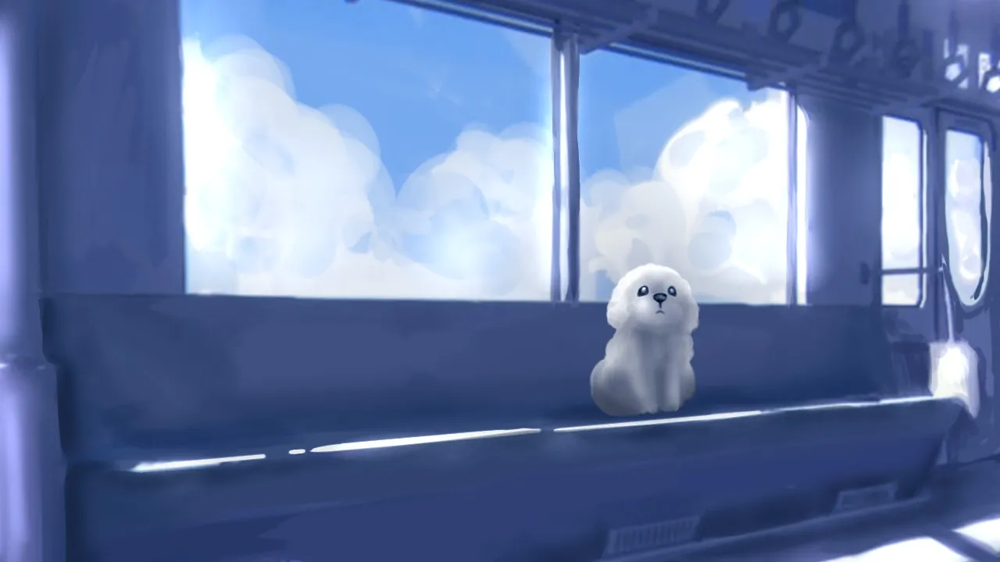
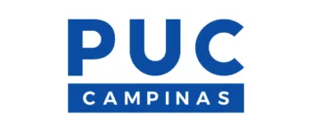

Faço ilustrações em estilos como semirrealismo, anime e cartoon, sempre adaptando o traço ao que o projeto pede.
Projeto interfaces pensando na experiência. Busco soluções simples, claras e que façam sentido para quem usa.
Construção de marcas consistentes, memoráveis e alinhadas com o conceito do projeto.
Materiais prontos para impressão, como pôsteres, flyers, cartões de visita e papelaria.

Sou estudante de Design Digital e ilustradora, com foco na criação de soluções visuais claras e bem estruturadas. Meu trabalho une ilustração e design para desenvolver projetos que equilibram estética e funcionalidade.

Pontifícia Universidade Católica.